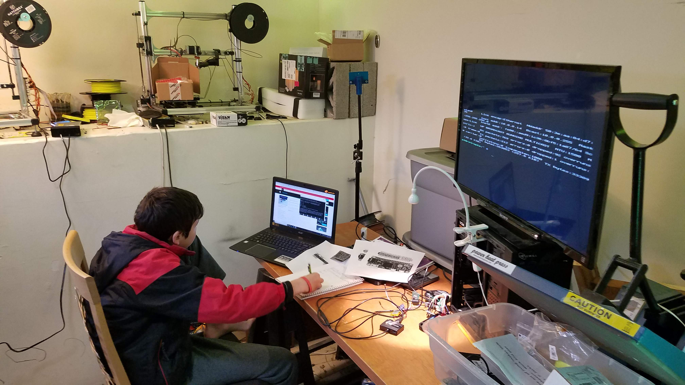
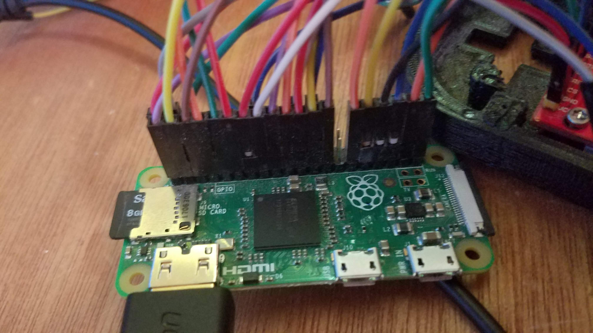
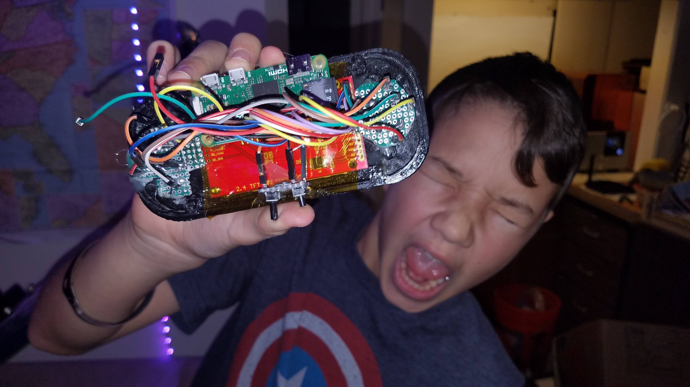
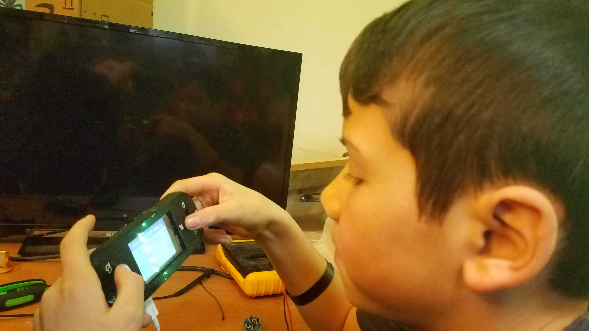

Step 1: Programming Raspberry Pi Zero with PiGame
Jeffrey and I decided to make a gameboy using raspberry pi. First we have to put PiGame one the raspberry pi. This maps buttons and let's us play games from roms (ostensibly, those we own).Fig. 1 PiGame
Step 2: Wiring Raspberry Pi
We wired this following an instructables tutorial.Fig. 2 Pi Wiring
Step 3: Wire Screen
We then wired the little hdmi touchscreen.Fig. 3 Screen
Step 4: Everything Wired!
I place sand in a drag.Fig. 4 Everything Wired
Step 5: Playing the Gameboy
Finally, Jeffrey gets to play the gameboy! (Only slightly less expensive than buying one)Fig. 5 Play!
Notes: